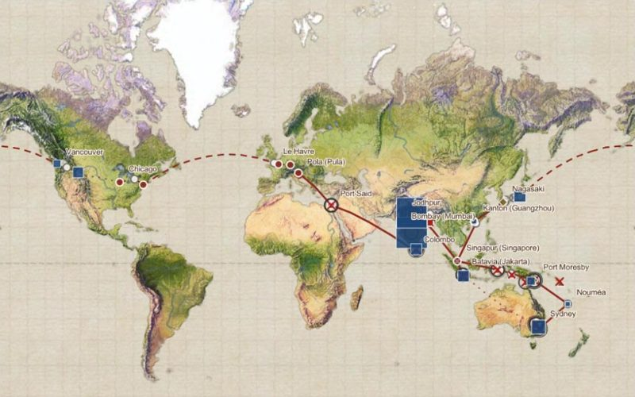

Team expedition_pool_edition
Todesursache: Franz Ferdinand
Die Jagdreise des Thronfolgers an Bord S.M.S. Kaiserin Elisabeth 1892/93
Franz Ferdinand reiste an Bord S.M.S. Kaiserin Elisabeth von Triest bis Yokohama und jagte unterwegs, wo immer es ging. Was davon überliefert ist, lag verstreut: in einem Archiv-Vault, einem gedruckten Tagebuch, in Zeitungen und Museumssammlungen. Wir haben daraus einen verknüpften Datensatz gemacht. Hier steht, wie er entstand, und welche drei Wege es gibt, ihn anzusehen.
Wie die Daten entstanden
-
Quellen sammeln
Ausgangspunkt ist ein Obsidian-Vault des Teams zur k.u.k. Kriegsmarine mit Notizen zu Schiffen, Reisen, Orten und Personen. Dazu kommen das Tagebuch Franz Ferdinands (gedruckt 1895/96, als Scan mit OCR bei archive.org) und die tageweise Reiseübersicht aus Regina Höfers Buch Imperial Sightseeing (2010) über die Indienreise des Erzherzogs.
-
Bereinigen und normalisieren
Den Vault haben wir bereinigt (Dubletten, falsche Verknüpfungen) und in einheitliche JSON-Dateien übertragen: Orte, Personen, Schiffe, Bilder, Objekte. Das Tagebuch ist in Tage gegliedert und mit der englischen Übersetzung auf franzferdinandsworld.com abgeglichen.
-
Anreichern
Jeder Tag und jede Jagd ist mit weiteren Quellen verknüpft: Zeitungsberichte aus ANNO (ÖNB), Sammlungsobjekte über Kulturpool, Fotos der Reise über Europeana und das Weltmuseum Wien, Orte über Wikidata und GeoNames, Personen über die GND. Die Jagden ergeben sich aus den Sätzen vom Erlegen und Schießen im Tagebuch.
-
Prüfen und belegen
Zeitungsausschnitte zählen nur, wenn sie Franz Ferdinand nennen und zur jeweiligen Jagd passen. Die Tagebuchzitate sind von Hand gegen Lesefehler korrigiert. Jeder Kartenpunkt sagt, worauf er beruht (Wikidata, GeoNames, geschätzt oder von Hand), jedes Foto, unter welcher Lizenz es steht.
Alle Schritte sind Skripte im Repository und lassen sich wiederholen: Ordner expedition_pool_edition im Repository Hack-the-Pool-2026 (Quellen, Aufbereitung, Visualisierung).
Drei Wege durch die Daten
-
 Lesen
Lesen
Die Geschichte
Wie eine Reportage: Kapitel für Kapitel durch die 18 Jagden bis Yokohama, mit Fotos, Tagebuchzitaten und dem Echo in der Presse. Beim Scrollen folgt die Karte.
-
 Erkunden
Erkunden
Die Reise Tag für Tag
Alle Tage auf der Weltkarte von 1872: Ebenen ein- und ausschalten, die Reise mit der Zeitleiste abspielen und jede Angabe bis zum Scan oder zur Quelle zurückverfolgen.
-

MitmachenDie Karte in ArcGIS
Route, Jagden, Sammlung, Presse und Fotos als offene Ebenen in ArcGIS Online. Jede Ebene sagt, woher ihre Daten stammen, wie sie entstanden und ob sie geprüft sind: zum Teilen, Ergänzen und gemeinsamen Weiterarbeiten.
Dieselbe Reise aus Sicht der Tiere erzählt Leanders StoryMap „Who was hunted?“ (Englisch). Die Kartenebenen als Dateien (GeoJSON, CSV): Ordner arcgis. Dazu der erste Prototyp: alle Reisen des Schiffs 1892–1914 mit Kulturpool-Treffern je Station.
Beteiligte Institutionen
-

Veranstalter · Objekte
Die Plattform für das digitale Kulturerbe Österreichs und Veranstalterin von Hack the Pool. Über die Kulturpool-API suchen wir Objekte zu den Orten und Jagden der Reise.
kulturpool.at -

Zeitungen · ANNO
ANNO, die historischen österreichischen Zeitungen online: Daraus stammen die Berichte über die Jagden, so wie sie die Leserinnen und Leser daheim erreichten.
anno.onb.ac.at -

Fotos · Sammlung Este
Ein Museum des KHM-Museumsverbands. Es bewahrt die Fotografien der Reise (Eduard Hodek jun.) und die Sammlung Este mit Objekten, die Franz Ferdinand unterwegs erwarb.
weltmuseumwien.at -

Fotos · Lizenzen
Die europäische Plattform für digitales Kulturerbe. Über die Europeana-API finden wir die Fotos der Reisefotografen, mit Lizenzangaben und Vorschaubildern.
europeana.eu
Weitere Quellen: archive.org, Wikidata, GeoNames, lobid-GND, franzferdinandsworld.com, Map Warper (Weltkarte von 1872). Die Logos sind Marken der jeweiligen Institutionen; die Logos stammen von den Websites der Institutionen, das des ACDH-CH von Wikimedia Commons (CC BY-SA 4.0).
Literatur
- Franz Ferdinand von Österreich-Este: Tagebuch meiner Reise um die Erde 1892–1893. 2 Bände, Wien: Hölder 1895–1896. Digitalisate: Band 1, Band 2 (archive.org).
- Regina Höfer (Hrsg.): Imperial Sightseeing. Die Indienreise von Erzherzog Franz Ferdinand von Österreich-Este. Wien 2010. doi:10.11588/xarep.00001404. Daraus die Reiseübersicht (S. 145–151), die Tag für Tag Ort und Etappe der Reise angibt, und die Inventarnummern der Reisefotos im Weltmuseum Wien.
Team expedition_pool_edition
- Rebeka Erdő
- Lisa Gollner
- Leander Gussmann
- Vasyl Holovachko
- Simon Mayer
- Caroline McKinley
- Anna Puhr
- Henje Richter
Grenzen
- Das Tagebuch liegt als OCR vor; was nicht von Hand korrigiert ist, enthält Lesefehler.
- Jagden, Presseberichte, Objekte und Fotos sind maschinell zugeordnet und nicht vollständig geprüft. Die Zeitungssuche ist bewusst streng: lieber wenige sichere als viele zweifelhafte Treffer.
- Einige Lagerplätze (Nepal, Neuguinea, Kanada) sind aus Entfernungen im Tagebuch geschätzt.
- Die Quellen sprechen aus Sicht des Jägers und seiner Begleiter. Die Menschen vor Ort erscheinen darin meist als Treiber, Diener oder Kulisse, die Tiere als Beute oder Trophäe.